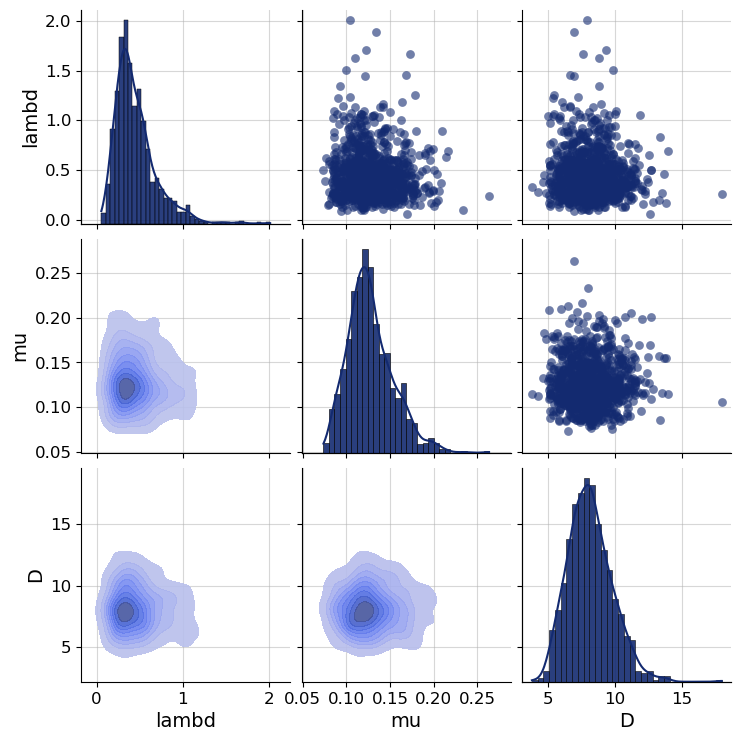

3. Posterior Estimation for SIR-like Models#
Author: Stefan T. Radev
import datetime
import matplotlib.pyplot as plt
import numpy as np
import pandas as pd
# ensure the backend is set
import os
if "KERAS_BACKEND" not in os.environ:
# set this to "torch", "tensorflow", or "jax"
os.environ["KERAS_BACKEND"] = "tensorflow"
import keras
# For BayesFlow devs: this ensures that the latest dev version can be found
import sys
sys.path.append('../')
import bayesflow as bf
3.1. Introduction #
In this tutorial, we will illustrate how to perform posterior inference on simple, stationary SIR-like models (complex models will be tackled in a further notebook). SIR-like models comprise suitable illustrative examples, since they generate time-series and their outputs represent the results of solving a system of ordinary differential equations (ODEs).
The details for tackling stochastic epidemiological models with neural networks are described in our corresponding paper, which you can consult for a more formal exposition and a more comprehensive treatment of neural architectures:
OutbreakFlow: Model-based Bayesian inference of disease outbreak dynamics with invertible neural networks and its application to the COVID-19 pandemics in Germany https://journals.plos.org/ploscompbiol/article?id=10.1371/journal.pcbi.1009472
3.2. Defining the Simulator #
RNG = np.random.default_rng(2024)
As described in our very first notebook, a generative model consists of a prior (encoding suitable parameter ranges) and a simulator (generating data given simulations). Our underlying model distinguishes between susceptible, \(S\), infected, \(I\), and recovered, \(R\), individuals with infection and recovery occurring at a constant transmission rate \(\lambda\) and constant recovery rate \(\mu\), respectively. The model dynamics are governed by the following system of ODEs:
with \(N = S + I + R\) denoting the total population size. For the purpose of forward inference (simulation), we will use a time step of \(dt = 1\), corresponding to daily case reports. In addition to the ODE parameters \(\lambda\) and \(\mu\), we consider a reporting delay parameter \(L\) and a dispersion parameter \(\psi\), which affect the number of reported infected individuals via a negative binomial disttribution (https://en.wikipedia.org/wiki/Negative_binomial_distribution):
In this way, we connect the latent disease model to an observation model, which renders the relationship between parameters and data a stochastic one. Note, that the observation model induces a further parameter \(\psi\), responsible for the dispersion of the noise. Finally, we will also treat the number of initially infected individuals, \(I_0\) as an unknown parameter (having its own prior distribution).
3.2.1. Prior #
We will place the following prior distributions over the five model parameters, summarized in the table below:
How did we come up with these priors? In this case, we rely on the domain expertise and previous research (https://www.science.org/doi/10.1126/science.abb9789). In addition, the new parameter \(\psi\) follows an exponential distribution, which restricts it to positive numbers. Below is the implementation of these priors:
def prior():
"""Generates a random draw from the joint prior."""
lambd = RNG.lognormal(mean=np.log(0.4), sigma=0.5)
mu = RNG.lognormal(mean=np.log(1 / 8), sigma=0.2)
D = RNG.lognormal(mean=np.log(8), sigma=0.2)
I0 = RNG.gamma(shape=2, scale=20)
psi = RNG.exponential(5)
return {"lambd": lambd, "mu": mu, "D": D, "I0": I0, "psi": psi}
3.2.2. Observation Model (Implicit Likelihood Function) #
from scipy.stats import nbinom
def convert_params(mu, phi):
"""Helper function to convert mean/dispersion parameterization of a negative binomial to N and p,
as expected by numpy's negative_binomial.
See https://en.wikipedia.org/wiki/Negative_binomial_distribution#Alternative_formulations
"""
r = phi
var = mu + 1 / r * mu**2
p = (var - mu) / var
return r, 1 - p
def stationary_SIR(lambd, mu, D, I0, psi, N=83e6, T=14, eps=1e-5):
"""Performs a forward simulation from the stationary SIR model given a random draw from the prior."""
# Extract parameters and round I0 and D
I0 = np.ceil(I0)
D = int(round(D))
# Initial conditions
S, I, R = [N - I0], [I0], [0]
# Reported new cases
C = [I0]
# Simulate T-1 timesteps
for t in range(1, T + D):
# Calculate new cases
I_new = lambd * (I[-1] * S[-1] / N)
# SIR equations
S_t = S[-1] - I_new
I_t = np.clip(I[-1] + I_new - mu * I[-1], 0.0, N)
R_t = np.clip(R[-1] + mu * I[-1], 0.0, N)
# Track
S.append(S_t)
I.append(I_t)
R.append(R_t)
C.append(I_new)
reparam = convert_params(np.clip(np.array(C[D:]), 0, N) + eps, psi)
C_obs = RNG.negative_binomial(reparam[0], reparam[1])
return dict(cases=C_obs)
As you can see, in addition to the parameters, our simulator requires two further arguments: the total population size \(N\) and the time horizon \(T\). These are quantities over which we can amortize (i.e., context variables), but for this example, we will just use the population of Germany and the first two weeks of the pandemics (i.e., \(T=14\)), in the same vein as https://www.science.org/doi/10.1126/science.abb9789.
3.2.3. Loading Real Data #
We will define a simple helper function to load the actually reported cases in 2020 for the first two weeks of the Covid-19 pandemic in Germany.
def load_data():
"""Helper function to load cumulative cases and transform them to new cases."""
confirmed_cases_url = "https://raw.githubusercontent.com/CSSEGISandData/COVID-19/master/csse_covid_19_data/csse_covid_19_time_series/time_series_covid19_confirmed_global.csv"
confirmed_cases = pd.read_csv(confirmed_cases_url, sep=",")
date_data_begin = datetime.date(2020, 3, 1)
date_data_end = datetime.date(2020, 3, 15)
format_date = lambda date_py: f"{date_py.month}/{date_py.day}/{str(date_py.year)[2:4]}"
date_formatted_begin = format_date(date_data_begin)
date_formatted_end = format_date(date_data_end)
cases_obs = np.array(
confirmed_cases.loc[confirmed_cases["Country/Region"] == "Germany", date_formatted_begin:date_formatted_end]
)[0]
new_cases_obs = np.diff(cases_obs)
return new_cases_obs
3.2.4. Stitiching Things Together #
We can combine the prior \(p(\theta)\) and the observation model \(p(x_{1:T}\mid\theta)\) into a joint model \(p(\theta, x_{1:T}) = p(\theta) \; p(x_{1:T}\mid\theta)\) using the make_simulator builder.
The resulting object can now generate batches of simulations.
simulator = bf.make_simulator([prior, stationary_SIR])
%%time
test_sims = simulator.sample(batch_size=2)
print(test_sims["lambd"].shape)
print(test_sims["D"].shape)
print(test_sims["cases"].shape)
(2, 1)
(2, 1)
(2, 14)
CPU times: user 929 μs, sys: 239 μs, total: 1.17 ms
Wall time: 1.07 ms
3.3. Prior Checking #
Any principled Bayesian workflow requires some prior predictive or prior pushforward checks to ensure that the prior specification is consistent with domain expertise (see https://betanalpha.github.io/assets/case_studies/principled_bayesian_workflow.html). The BayesFlow library provides some rudimentary visual tools for performing prior checking. For instance, we can visually inspect the joint prior in the form of bivariate plots. We can focus on particular parameter combinations, such as \(\lambda\), \(\mu\), and \(D\):
prior_samples = simulator.simulators[0].sample(1000)
grid = bf.diagnostics.plots.pairs_samples(
prior_samples, variable_keys=["lambd", "mu", "D"]
)

3.4. Defining the Adapter#
We need to ensure that the outputs of the forward model are suitable for processing with neural networks. Currently, they are not, since our data \(x_{1:T}\) consists of large integer (count) values. However, neural networks like scaled data. Furthermore, our parameters \(\theta\) exhibit widely different scales due to their prior specification and role in the simulator. Finally, BayesFlow needs to know which variables are to be inferred and which ones are to be processed by the summary network before being passed to the inference network. We handle all of these steps using an Adapter.
Since all of our parameters and observables can only take on positive values, we will apply a log plus one transform to all quantities. Note, that BayesFlow expects the following keys to be present in the final outputs of your configured simulations:
inference_variables: These are the variables we are inferring.summary_variables: These are the variables that are compressed throgh a summary network and used for inferring the inference variables.
Thus, what our approximators are learning is \(p(\text{inference variables} \mid t(\text{summary variables}))\), where \(t\) is the summary network.
adapter = (
bf.adapters.Adapter()
.convert_dtype("float64", "float32")
.as_time_series("cases")
.concatenate(["lambd", "mu", "D", "I0", "psi"], into="inference_variables")
.rename("cases", "summary_variables")
# since all our variables are non-negative (zero or larger)
# this .apply call ensures that the variables are transformed
# to the unconstrained real space and can be back-transformed under the hood
.apply(forward=lambda x: np.log1p(x), inverse=lambda x: np.expm1(x))
)
# Let's check out the new shapes
adapted_sims = adapter(simulator.sample(2))
print(adapted_sims["summary_variables"].shape)
print(adapted_sims["inference_variables"].shape)
(2, 14, 1)
(2, 5)
3.5. Defining the Neural Approximator #
We can now proceed to define our BayesFlow neural architecture, that is, combine a summary network with an inference network.
3.5.1. Summary Network #
Since our simulator outputs 3D tensors of shape (batch_size, T = 14, 1), we need to reduce this three-dimensional tensor into a two-dimensional tensor of shape (batch_size, summary_dim). Our model outputs are actually so simple that we could have just removed the trailing dimension of the raw outputs and simply fed the data directly to the inference network.
However, we demonstrate the use of a simple Gated Recurrent Unit (GRU) summary network. Any keras model can interact with BayesFlow by inherting from SummaryNetwork which accepts an addition stage argument indicating the mode the network is currently operating in (i.e., training vs. inference).
class GRU(bf.networks.SummaryNetwork):
def __init__(self, **kwargs):
super().__init__(**kwargs)
self.gru = keras.layers.GRU(64, dropout=0.1)
self.summary_stats = keras.layers.Dense(8)
def call(self, time_series, **kwargs):
"""Compresses time_series of shape (batch_size, T, 1) into summaries of shape (batch_size, 8)."""
summary = self.gru(time_series, training=kwargs.get("stage") == "training")
summary = self.summary_stats(summary)
return summary
summary_net = GRU()
3.5.2. Inference Network#
As inference network we choose a flow matching architecture with some dropout to robustify the inference. Dropout is primarily important when learning from a (small) offline dataset. See below for details.
inference_net = bf.networks.CouplingFlow(
subnet_kwargs={"residual": True, "dropout": 0.1, "widths": (128, 128, 128)}
)
workflow = bf.BasicWorkflow(
simulator=simulator,
adapter=adapter,
inference_network=inference_net,
summary_network=summary_net,
inference_variables=["lambd", "mu", "D", "I0", "psi"]
)
3.6. Training #
Ready to train! Since our simulator is pretty fast, we can safely go with online training. Let’s glean the time taken for a batch of \(32\) simulations.
%%time
_ = workflow.simulate(32)
CPU times: user 4.79 ms, sys: 574 μs, total: 5.37 ms
Wall time: 5.11 ms
Not too bad! However, for the purpose of illustration, we will go with offline training using a fixed data set of simulations.
3.6.1. Generating Offline Data #
training_data = workflow.simulate(5000)
validation_data = workflow.simulate(300)
We are now ready to train. If not provided, the default settings use \(100\) epochs with a batch size of \(32\).
history = workflow.fit_offline(training_data, epochs=300, batch_size=64, validation_data=validation_data)
Epoch 1/300
79/79 ━━━━━━━━━━━━━━━━━━━━ 5s 36ms/step - loss: 2.5531 - loss/inference_loss: 2.5531 - val_loss: -0.3906 - val_loss/inference_loss: -0.3906
Epoch 2/300
79/79 ━━━━━━━━━━━━━━━━━━━━ 0s 6ms/step - loss: -2.0562 - loss/inference_loss: -2.0562 - val_loss: -1.8728 - val_loss/inference_loss: -1.8728
Epoch 3/300
79/79 ━━━━━━━━━━━━━━━━━━━━ 0s 6ms/step - loss: -2.5561 - loss/inference_loss: -2.5561 - val_loss: -3.0432 - val_loss/inference_loss: -3.0432
Epoch 4/300
79/79 ━━━━━━━━━━━━━━━━━━━━ 0s 6ms/step - loss: -2.8517 - loss/inference_loss: -2.8517 - val_loss: -2.8174 - val_loss/inference_loss: -2.8174
Epoch 5/300
79/79 ━━━━━━━━━━━━━━━━━━━━ 0s 6ms/step - loss: -2.8977 - loss/inference_loss: -2.8977 - val_loss: -2.9406 - val_loss/inference_loss: -2.9406
Epoch 6/300
79/79 ━━━━━━━━━━━━━━━━━━━━ 0s 6ms/step - loss: -2.7563 - loss/inference_loss: -2.7563 - val_loss: -3.2228 - val_loss/inference_loss: -3.2228
Epoch 7/300
79/79 ━━━━━━━━━━━━━━━━━━━━ 0s 6ms/step - loss: -2.7914 - loss/inference_loss: -2.7914 - val_loss: -1.9627 - val_loss/inference_loss: -1.9627
Epoch 8/300
79/79 ━━━━━━━━━━━━━━━━━━━━ 0s 6ms/step - loss: -2.8824 - loss/inference_loss: -2.8824 - val_loss: -3.0298 - val_loss/inference_loss: -3.0298
Epoch 9/300
79/79 ━━━━━━━━━━━━━━━━━━━━ 0s 6ms/step - loss: -2.8764 - loss/inference_loss: -2.8764 - val_loss: -3.3240 - val_loss/inference_loss: -3.3240
Epoch 10/300
79/79 ━━━━━━━━━━━━━━━━━━━━ 0s 6ms/step - loss: -3.0118 - loss/inference_loss: -3.0118 - val_loss: -2.6283 - val_loss/inference_loss: -2.6283
Epoch 11/300
79/79 ━━━━━━━━━━━━━━━━━━━━ 0s 6ms/step - loss: -2.9128 - loss/inference_loss: -2.9128 - val_loss: -2.7869 - val_loss/inference_loss: -2.7869
Epoch 12/300
79/79 ━━━━━━━━━━━━━━━━━━━━ 0s 6ms/step - loss: -2.9950 - loss/inference_loss: -2.9950 - val_loss: -2.7895 - val_loss/inference_loss: -2.7895
Epoch 13/300
79/79 ━━━━━━━━━━━━━━━━━━━━ 0s 6ms/step - loss: -3.0348 - loss/inference_loss: -3.0348 - val_loss: -3.6223 - val_loss/inference_loss: -3.6223
Epoch 14/300
79/79 ━━━━━━━━━━━━━━━━━━━━ 0s 6ms/step - loss: -3.0897 - loss/inference_loss: -3.0897 - val_loss: -3.1302 - val_loss/inference_loss: -3.1302
Epoch 15/300
79/79 ━━━━━━━━━━━━━━━━━━━━ 0s 6ms/step - loss: -3.1331 - loss/inference_loss: -3.1331 - val_loss: -2.4433 - val_loss/inference_loss: -2.4433
Epoch 16/300
79/79 ━━━━━━━━━━━━━━━━━━━━ 1s 6ms/step - loss: -3.2182 - loss/inference_loss: -3.2182 - val_loss: -3.0852 - val_loss/inference_loss: -3.0852
Epoch 17/300
79/79 ━━━━━━━━━━━━━━━━━━━━ 0s 6ms/step - loss: -3.4051 - loss/inference_loss: -3.4051 - val_loss: -3.5660 - val_loss/inference_loss: -3.5660
Epoch 18/300
79/79 ━━━━━━━━━━━━━━━━━━━━ 1s 6ms/step - loss: -3.3464 - loss/inference_loss: -3.3464 - val_loss: -3.1822 - val_loss/inference_loss: -3.1822
Epoch 19/300
79/79 ━━━━━━━━━━━━━━━━━━━━ 0s 6ms/step - loss: -3.2502 - loss/inference_loss: -3.2502 - val_loss: -3.2908 - val_loss/inference_loss: -3.2908
Epoch 20/300
79/79 ━━━━━━━━━━━━━━━━━━━━ 0s 6ms/step - loss: -3.3290 - loss/inference_loss: -3.3290 - val_loss: -3.0506 - val_loss/inference_loss: -3.0506
Epoch 21/300
79/79 ━━━━━━━━━━━━━━━━━━━━ 0s 6ms/step - loss: -3.3385 - loss/inference_loss: -3.3385 - val_loss: -3.8582 - val_loss/inference_loss: -3.8582
Epoch 22/300
79/79 ━━━━━━━━━━━━━━━━━━━━ 0s 6ms/step - loss: -2.9794 - loss/inference_loss: -2.9794 - val_loss: -2.8534 - val_loss/inference_loss: -2.8534
Epoch 23/300
79/79 ━━━━━━━━━━━━━━━━━━━━ 0s 6ms/step - loss: -3.1077 - loss/inference_loss: -3.1077 - val_loss: -3.0692 - val_loss/inference_loss: -3.0692
Epoch 24/300
79/79 ━━━━━━━━━━━━━━━━━━━━ 0s 6ms/step - loss: -3.4165 - loss/inference_loss: -3.4165 - val_loss: -3.4301 - val_loss/inference_loss: -3.4301
Epoch 25/300
79/79 ━━━━━━━━━━━━━━━━━━━━ 0s 6ms/step - loss: -3.2900 - loss/inference_loss: -3.2900 - val_loss: -3.1961 - val_loss/inference_loss: -3.1961
Epoch 26/300
79/79 ━━━━━━━━━━━━━━━━━━━━ 1s 6ms/step - loss: -3.5751 - loss/inference_loss: -3.5751 - val_loss: -3.0668 - val_loss/inference_loss: -3.0668
Epoch 27/300
79/79 ━━━━━━━━━━━━━━━━━━━━ 0s 6ms/step - loss: -3.5435 - loss/inference_loss: -3.5435 - val_loss: -3.9203 - val_loss/inference_loss: -3.9203
Epoch 28/300
79/79 ━━━━━━━━━━━━━━━━━━━━ 0s 6ms/step - loss: -3.6201 - loss/inference_loss: -3.6201 - val_loss: -3.4658 - val_loss/inference_loss: -3.4658
Epoch 29/300
79/79 ━━━━━━━━━━━━━━━━━━━━ 0s 6ms/step - loss: -3.5914 - loss/inference_loss: -3.5914 - val_loss: -3.4542 - val_loss/inference_loss: -3.4542
Epoch 30/300
79/79 ━━━━━━━━━━━━━━━━━━━━ 0s 6ms/step - loss: -3.7011 - loss/inference_loss: -3.7011 - val_loss: -3.7330 - val_loss/inference_loss: -3.7330
Epoch 31/300
79/79 ━━━━━━━━━━━━━━━━━━━━ 0s 6ms/step - loss: -3.4554 - loss/inference_loss: -3.4554 - val_loss: -3.5343 - val_loss/inference_loss: -3.5343
Epoch 32/300
79/79 ━━━━━━━━━━━━━━━━━━━━ 0s 6ms/step - loss: -3.8494 - loss/inference_loss: -3.8494 - val_loss: -4.2008 - val_loss/inference_loss: -4.2008
Epoch 33/300
79/79 ━━━━━━━━━━━━━━━━━━━━ 0s 6ms/step - loss: -3.8396 - loss/inference_loss: -3.8396 - val_loss: -3.8531 - val_loss/inference_loss: -3.8531
Epoch 34/300
79/79 ━━━━━━━━━━━━━━━━━━━━ 1s 7ms/step - loss: -3.8048 - loss/inference_loss: -3.8048 - val_loss: -3.4396 - val_loss/inference_loss: -3.4396
Epoch 35/300
79/79 ━━━━━━━━━━━━━━━━━━━━ 0s 6ms/step - loss: -3.9050 - loss/inference_loss: -3.9050 - val_loss: -3.4339 - val_loss/inference_loss: -3.4339
Epoch 36/300
79/79 ━━━━━━━━━━━━━━━━━━━━ 0s 6ms/step - loss: -4.0386 - loss/inference_loss: -4.0386 - val_loss: -3.8508 - val_loss/inference_loss: -3.8508
Epoch 37/300
79/79 ━━━━━━━━━━━━━━━━━━━━ 0s 6ms/step - loss: -3.6783 - loss/inference_loss: -3.6783 - val_loss: -3.4381 - val_loss/inference_loss: -3.4381
Epoch 38/300
79/79 ━━━━━━━━━━━━━━━━━━━━ 0s 6ms/step - loss: -3.7113 - loss/inference_loss: -3.7113 - val_loss: -3.2074 - val_loss/inference_loss: -3.2074
Epoch 39/300
79/79 ━━━━━━━━━━━━━━━━━━━━ 0s 6ms/step - loss: -3.8614 - loss/inference_loss: -3.8614 - val_loss: -3.9134 - val_loss/inference_loss: -3.9134
Epoch 40/300
79/79 ━━━━━━━━━━━━━━━━━━━━ 0s 6ms/step - loss: -4.0887 - loss/inference_loss: -4.0887 - val_loss: -3.9001 - val_loss/inference_loss: -3.9001
Epoch 41/300
79/79 ━━━━━━━━━━━━━━━━━━━━ 0s 6ms/step - loss: -3.8765 - loss/inference_loss: -3.8765 - val_loss: -3.9385 - val_loss/inference_loss: -3.9385
Epoch 42/300
79/79 ━━━━━━━━━━━━━━━━━━━━ 0s 6ms/step - loss: -4.1186 - loss/inference_loss: -4.1186 - val_loss: -3.8955 - val_loss/inference_loss: -3.8955
Epoch 43/300
79/79 ━━━━━━━━━━━━━━━━━━━━ 0s 6ms/step - loss: -4.0108 - loss/inference_loss: -4.0108 - val_loss: -4.5758 - val_loss/inference_loss: -4.5758
Epoch 44/300
79/79 ━━━━━━━━━━━━━━━━━━━━ 0s 6ms/step - loss: -4.0099 - loss/inference_loss: -4.0099 - val_loss: -4.1036 - val_loss/inference_loss: -4.1036
Epoch 45/300
79/79 ━━━━━━━━━━━━━━━━━━━━ 0s 6ms/step - loss: -4.2357 - loss/inference_loss: -4.2357 - val_loss: -4.4953 - val_loss/inference_loss: -4.4953
Epoch 46/300
79/79 ━━━━━━━━━━━━━━━━━━━━ 0s 6ms/step - loss: -4.2844 - loss/inference_loss: -4.2844 - val_loss: -3.1974 - val_loss/inference_loss: -3.1974
Epoch 47/300
79/79 ━━━━━━━━━━━━━━━━━━━━ 1s 7ms/step - loss: -4.0507 - loss/inference_loss: -4.0507 - val_loss: -4.3681 - val_loss/inference_loss: -4.3681
Epoch 48/300
79/79 ━━━━━━━━━━━━━━━━━━━━ 0s 6ms/step - loss: -4.2557 - loss/inference_loss: -4.2557 - val_loss: -4.2150 - val_loss/inference_loss: -4.2150
Epoch 49/300
79/79 ━━━━━━━━━━━━━━━━━━━━ 1s 7ms/step - loss: -4.2366 - loss/inference_loss: -4.2366 - val_loss: -4.0352 - val_loss/inference_loss: -4.0352
Epoch 50/300
79/79 ━━━━━━━━━━━━━━━━━━━━ 0s 6ms/step - loss: -4.2548 - loss/inference_loss: -4.2548 - val_loss: -4.5328 - val_loss/inference_loss: -4.5328
Epoch 51/300
79/79 ━━━━━━━━━━━━━━━━━━━━ 0s 6ms/step - loss: -4.3518 - loss/inference_loss: -4.3518 - val_loss: -4.3215 - val_loss/inference_loss: -4.3215
Epoch 52/300
79/79 ━━━━━━━━━━━━━━━━━━━━ 1s 6ms/step - loss: -4.1109 - loss/inference_loss: -4.1109 - val_loss: -4.1160 - val_loss/inference_loss: -4.1160
Epoch 53/300
79/79 ━━━━━━━━━━━━━━━━━━━━ 0s 6ms/step - loss: -4.2647 - loss/inference_loss: -4.2647 - val_loss: -4.3841 - val_loss/inference_loss: -4.3841
Epoch 54/300
79/79 ━━━━━━━━━━━━━━━━━━━━ 0s 6ms/step - loss: -4.3571 - loss/inference_loss: -4.3571 - val_loss: -4.1630 - val_loss/inference_loss: -4.1630
Epoch 55/300
79/79 ━━━━━━━━━━━━━━━━━━━━ 0s 6ms/step - loss: -4.3761 - loss/inference_loss: -4.3761 - val_loss: -4.0612 - val_loss/inference_loss: -4.0612
Epoch 56/300
79/79 ━━━━━━━━━━━━━━━━━━━━ 0s 6ms/step - loss: -4.4602 - loss/inference_loss: -4.4602 - val_loss: -4.3704 - val_loss/inference_loss: -4.3704
Epoch 57/300
79/79 ━━━━━━━━━━━━━━━━━━━━ 1s 6ms/step - loss: -4.3413 - loss/inference_loss: -4.3413 - val_loss: -4.4499 - val_loss/inference_loss: -4.4499
Epoch 58/300
79/79 ━━━━━━━━━━━━━━━━━━━━ 0s 6ms/step - loss: -4.2684 - loss/inference_loss: -4.2684 - val_loss: -4.3559 - val_loss/inference_loss: -4.3559
Epoch 59/300
79/79 ━━━━━━━━━━━━━━━━━━━━ 0s 6ms/step - loss: -4.3979 - loss/inference_loss: -4.3979 - val_loss: -4.3347 - val_loss/inference_loss: -4.3347
Epoch 60/300
79/79 ━━━━━━━━━━━━━━━━━━━━ 0s 6ms/step - loss: -4.4743 - loss/inference_loss: -4.4743 - val_loss: -4.5121 - val_loss/inference_loss: -4.5121
Epoch 61/300
79/79 ━━━━━━━━━━━━━━━━━━━━ 0s 6ms/step - loss: -4.4936 - loss/inference_loss: -4.4936 - val_loss: -4.5144 - val_loss/inference_loss: -4.5144
Epoch 62/300
79/79 ━━━━━━━━━━━━━━━━━━━━ 0s 6ms/step - loss: -4.5711 - loss/inference_loss: -4.5711 - val_loss: -4.7783 - val_loss/inference_loss: -4.7783
Epoch 63/300
79/79 ━━━━━━━━━━━━━━━━━━━━ 0s 6ms/step - loss: -4.4770 - loss/inference_loss: -4.4770 - val_loss: -4.0968 - val_loss/inference_loss: -4.0968
Epoch 64/300
79/79 ━━━━━━━━━━━━━━━━━━━━ 0s 6ms/step - loss: -4.5481 - loss/inference_loss: -4.5481 - val_loss: -4.3363 - val_loss/inference_loss: -4.3363
Epoch 65/300
79/79 ━━━━━━━━━━━━━━━━━━━━ 0s 6ms/step - loss: -4.4884 - loss/inference_loss: -4.4884 - val_loss: -4.5281 - val_loss/inference_loss: -4.5281
Epoch 66/300
79/79 ━━━━━━━━━━━━━━━━━━━━ 0s 6ms/step - loss: -4.5017 - loss/inference_loss: -4.5017 - val_loss: -4.2938 - val_loss/inference_loss: -4.2938
Epoch 67/300
79/79 ━━━━━━━━━━━━━━━━━━━━ 0s 6ms/step - loss: -4.4979 - loss/inference_loss: -4.4979 - val_loss: -4.4374 - val_loss/inference_loss: -4.4374
Epoch 68/300
79/79 ━━━━━━━━━━━━━━━━━━━━ 0s 6ms/step - loss: -4.5255 - loss/inference_loss: -4.5255 - val_loss: -4.3917 - val_loss/inference_loss: -4.3917
Epoch 69/300
79/79 ━━━━━━━━━━━━━━━━━━━━ 0s 6ms/step - loss: -4.6016 - loss/inference_loss: -4.6016 - val_loss: -4.5042 - val_loss/inference_loss: -4.5042
Epoch 70/300
79/79 ━━━━━━━━━━━━━━━━━━━━ 0s 6ms/step - loss: -4.5722 - loss/inference_loss: -4.5722 - val_loss: -4.5348 - val_loss/inference_loss: -4.5348
Epoch 71/300
79/79 ━━━━━━━━━━━━━━━━━━━━ 0s 6ms/step - loss: -4.6351 - loss/inference_loss: -4.6351 - val_loss: -4.2527 - val_loss/inference_loss: -4.2527
Epoch 72/300
79/79 ━━━━━━━━━━━━━━━━━━━━ 0s 6ms/step - loss: -4.5341 - loss/inference_loss: -4.5341 - val_loss: -4.9177 - val_loss/inference_loss: -4.9177
Epoch 73/300
79/79 ━━━━━━━━━━━━━━━━━━━━ 0s 6ms/step - loss: -4.5988 - loss/inference_loss: -4.5988 - val_loss: -4.4220 - val_loss/inference_loss: -4.4220
Epoch 74/300
79/79 ━━━━━━━━━━━━━━━━━━━━ 0s 6ms/step - loss: -4.6787 - loss/inference_loss: -4.6787 - val_loss: -4.3558 - val_loss/inference_loss: -4.3558
Epoch 75/300
79/79 ━━━━━━━━━━━━━━━━━━━━ 0s 6ms/step - loss: -4.6518 - loss/inference_loss: -4.6518 - val_loss: -4.2514 - val_loss/inference_loss: -4.2514
Epoch 76/300
79/79 ━━━━━━━━━━━━━━━━━━━━ 1s 6ms/step - loss: -4.5645 - loss/inference_loss: -4.5645 - val_loss: -4.2296 - val_loss/inference_loss: -4.2296
Epoch 77/300
79/79 ━━━━━━━━━━━━━━━━━━━━ 0s 6ms/step - loss: -4.6456 - loss/inference_loss: -4.6456 - val_loss: -4.6252 - val_loss/inference_loss: -4.6252
Epoch 78/300
79/79 ━━━━━━━━━━━━━━━━━━━━ 0s 6ms/step - loss: -4.6519 - loss/inference_loss: -4.6519 - val_loss: -4.5839 - val_loss/inference_loss: -4.5839
Epoch 79/300
79/79 ━━━━━━━━━━━━━━━━━━━━ 0s 6ms/step - loss: -4.6782 - loss/inference_loss: -4.6782 - val_loss: -4.9393 - val_loss/inference_loss: -4.9393
Epoch 80/300
79/79 ━━━━━━━━━━━━━━━━━━━━ 0s 6ms/step - loss: -4.7229 - loss/inference_loss: -4.7229 - val_loss: -4.7028 - val_loss/inference_loss: -4.7028
Epoch 81/300
79/79 ━━━━━━━━━━━━━━━━━━━━ 1s 6ms/step - loss: -4.7026 - loss/inference_loss: -4.7026 - val_loss: -3.9407 - val_loss/inference_loss: -3.9407
Epoch 82/300
79/79 ━━━━━━━━━━━━━━━━━━━━ 0s 6ms/step - loss: -4.7247 - loss/inference_loss: -4.7247 - val_loss: -4.2338 - val_loss/inference_loss: -4.2338
Epoch 83/300
79/79 ━━━━━━━━━━━━━━━━━━━━ 1s 6ms/step - loss: -4.5767 - loss/inference_loss: -4.5767 - val_loss: -3.8959 - val_loss/inference_loss: -3.8959
Epoch 84/300
79/79 ━━━━━━━━━━━━━━━━━━━━ 0s 6ms/step - loss: -4.6499 - loss/inference_loss: -4.6499 - val_loss: -4.2496 - val_loss/inference_loss: -4.2496
Epoch 85/300
79/79 ━━━━━━━━━━━━━━━━━━━━ 1s 6ms/step - loss: -4.6668 - loss/inference_loss: -4.6668 - val_loss: -4.3125 - val_loss/inference_loss: -4.3125
Epoch 86/300
79/79 ━━━━━━━━━━━━━━━━━━━━ 0s 6ms/step - loss: -4.7292 - loss/inference_loss: -4.7292 - val_loss: -4.9538 - val_loss/inference_loss: -4.9538
Epoch 87/300
79/79 ━━━━━━━━━━━━━━━━━━━━ 0s 6ms/step - loss: -4.6984 - loss/inference_loss: -4.6984 - val_loss: -4.3080 - val_loss/inference_loss: -4.3080
Epoch 88/300
1/79 ━━━━━━━━━━━━━━━━━━━━ 0s 8ms/step - loss: -4.5434 - loss/inference_loss: -4.5434
3.6.2. Inspecting the Loss #
Following our online simulation-based training, we can quickly visualize the loss trajectory using the plots.loss function from the diagnostics module.
f = bf.diagnostics.plots.loss(history)
Great, it seems that our approximator has converged! Before we get too excited and throw our networks at real data, we need to make sure that they meet our expectations in silico, that is, given the small world of simulations the networks have seen during training.
3.7. Validation Phase#
When it comes to validating posterior inference, we can either deploy manual diagnostics from the diagnostics module, or use the automated functions from the BasicWorkflow object. First, we demonstrate manual validation.
# Set the number of posterior draws you want to get
num_samples = 1000
# Simulate 300 scenarios and extract time series from dict
test_sims = workflow.simulate(300)
time_series = test_sims.pop("cases")
# Obtain num_samples posterior samples per scenario
samples = workflow.sample(conditions={"cases": time_series}, num_samples=num_samples)
3.7.1. Simulation-Based Calibration - Rank Histograms#
As a further small world (i.e., before real data) sanity check, we can also test the calibration of the amortizer through simulation-based calibration (SBC). See the corresponding paper for more details (https://arxiv.org/pdf/1804.06788.pdf). Accordingly, we expect to observe approximately uniform rank statistic histograms. In the present case, this is indeed what we get:
f = bf.diagnostics.plots.calibration_histogram(samples, test_sims)
3.7.2. Simulation-Based Calibration - Rank ECDF#
For models with many parameters, inspecting many histograms can become unwieldly. Moreover, the num_bins hyperparameter for the construction of SBC rank histograms can be hard to choose. An alternative diagnostic approach for calibration is through empirical cumulative distribution functions (ECDF) of rank statistics. You can read more about this approach in the corresponding paper (https://arxiv.org/abs/2103.10522).
In order to inspect the ECDFs of marginal distributions, we will simulate \(300\) new pairs of simulated data and generating parameters \((\boldsymbol{x}, \boldsymbol{\theta})\) and use the function plots.calibration_ecdf from the diagnostics module:
f = bf.diagnostics.plots.calibration_ecdf(samples, test_sims, difference=True)
3.7.3. Inferential Adequacy (Global)#
Depending on the application, it might be interesting to see how well summaries of the full posterior (e.g., means, medians) recover the assumed true parameter values. We can test this in silico via the plots.recovery function in the diagnostics module. For instance, we can compare how well posterior means recover the true parameter (i.e., posterior z-score, https://betanalpha.github.io/assets/case_studies/principled_bayesian_workflow.html):
f = bf.diagnostics.plots.recovery(samples, test_sims)
Interestingly, it seems that the parameters \(\theta_1 = \mu\) and \(\theta_2 = D\) have not been learned properly as they are estimated roughly the same for every simulated datset used during testing. For some models, this might indicate that the the network training had partially failed; and we would have to train longer or adjust the network architecture. For this specific model, however, the reason is different: From the provided observables, these parameters are actually not identified so cannot be learned consistently, no matter the kind of approximator we would use.
3.7.4. Automatic Diagnostics#
The basic workflow object wraps together a bunch of useful functions that can be called automatically. For instance, we can easily obtain numerical error estimates for the big three: normalized roor mean square error (NRMSE), posterior contraction, and calibration, for \(300\) new data sets:
metrics = workflow.compute_diagnostics(test_data=300)
metrics
We can also obtain the full set of graphical diagnostics:
figures = workflow.plot_diagnostics(
test_data=300,
loss_kwargs={"figsize": (15, 3), "label_fontsize": 12},
recovery_kwargs={"figsize": (15, 3), "label_fontsize": 12},
calibration_ecdf_kwargs={"figsize": (15, 3), "legend_fontsize": 8, "difference": True, "label_fontsize": 12},
z_score_contraction_kwargs={"figsize": (15, 3), "label_fontsize": 12}
)
3.8. Inference Phase #
We can now move on to using real data. This is easy, and since we are using an adapter, the same transformations applied during training will be applied during the inference phase.
# Our real-data loader returns the time series as a 1D array
obs_cases = load_data()
# Note that we transform the 1D array into shape (1, T), indicating one time series
samples = workflow.sample(conditions={"cases": obs_cases[None, :]}, num_samples=num_samples)
# Convert into a nice format 2D data frame
samples = workflow.samples_to_data_frame(samples)
samples
3.8.1. Posterior Retrodictive Checks #
These are also called posterior predictive checks, but here we want to explicitly highlight the fact that we are not predicting future data but testing the generative performance or re-simulation performance of the model. In other words, we want to test how well the simulator can reproduce the actually observed data given the parameter posterior \(p(\theta \mid x_{1:T})\).
Here, we will create a custom function which plots the observed data and then overlays draws from the posterior predictive.
def plot_ppc(samples, obs_cases, logscale=True, color="#132a70", figsize=(12, 6), font_size=18):
"""
Helper function to perform some plotting of the posterior predictive.
"""
# Plot settings
plt.rcParams["font.size"] = font_size
f, ax = plt.subplots(1, 1, figsize=figsize)
T = len(obs_cases)
# Re-simulations
sims = []
for i in range(samples.shape[0]):
# Note - simulator returns 2D arrays of shape (T, 1), so we remove trailing dim
sim_cases = stationary_SIR(*samples.values[i])
sims.append(sim_cases["cases"])
sims = np.array(sims)
# Compute quantiles for each t = 1,...,T
qs_50 = np.quantile(sims, q=[0.25, 0.75], axis=0)
qs_90 = np.quantile(sims, q=[0.05, 0.95], axis=0)
qs_95 = np.quantile(sims, q=[0.025, 0.975], axis=0)
# Plot median predictions and observed data
ax.plot(np.median(sims, axis=0), label="Median predicted cases", color=color)
ax.plot(obs_cases, marker="o", label="Reported cases", color="black", linestyle="dashed", alpha=0.8)
# Add compatibility intervals (also called credible intervals)
ax.fill_between(range(T), qs_50[0], qs_50[1], color=color, alpha=0.5, label="50% CI")
ax.fill_between(range(T), qs_90[0], qs_90[1], color=color, alpha=0.3, label="90% CI")
ax.fill_between(range(T), qs_95[0], qs_95[1], color=color, alpha=0.1, label="95% CI")
# Grid and schmuck
ax.grid(color="grey", linestyle="-", linewidth=0.25, alpha=0.5)
ax.spines["right"].set_visible(False)
ax.spines["top"].set_visible(False)
ax.set_xlabel("Days since pandemic onset")
ax.set_ylabel("Number of cases")
ax.minorticks_off()
if logscale:
ax.set_yscale("log")
ax.legend(fontsize=font_size)
return f
We can now go on and plot the re-simulations:
f = plot_ppc(samples, obs_cases)
That’s it for this tutorial! You now know how to use the basic building blocks of BayesFlow to create amortized neural approximators. :)